Gestão Escolar e Dossiê do Aluno
Uma plataforma completa para a administração de cursos, aulas e frequência, complementada por um dossiê detalhado do aluno que centraliza informações, desempenho e comunicação personalizada via e-mail e WhatsApp.

Galeria do Projeto
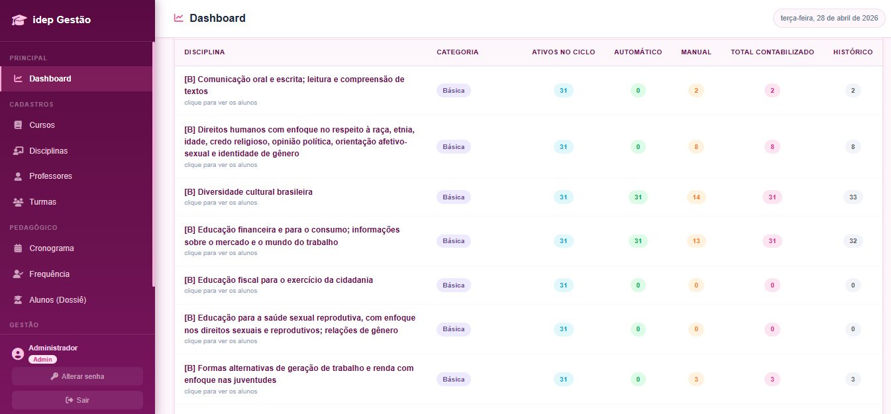
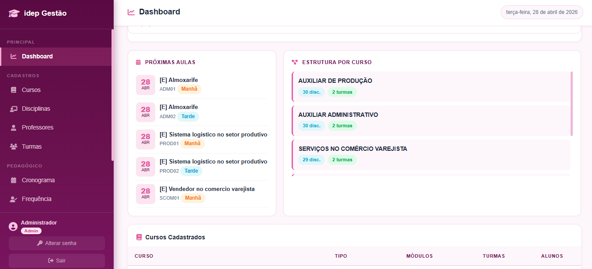
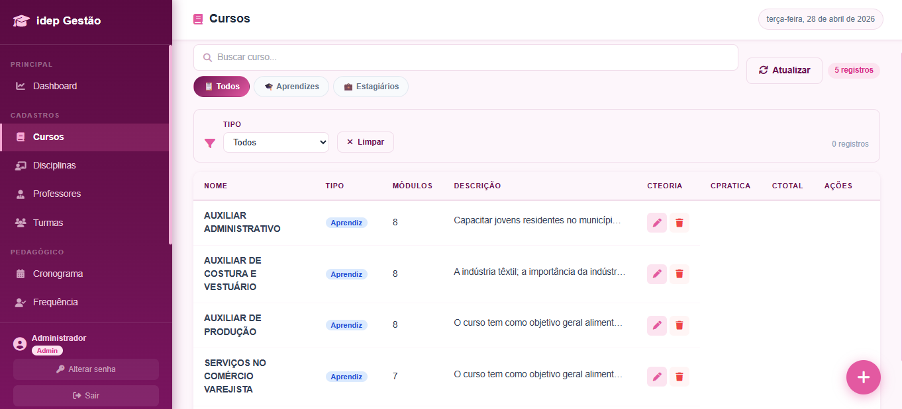
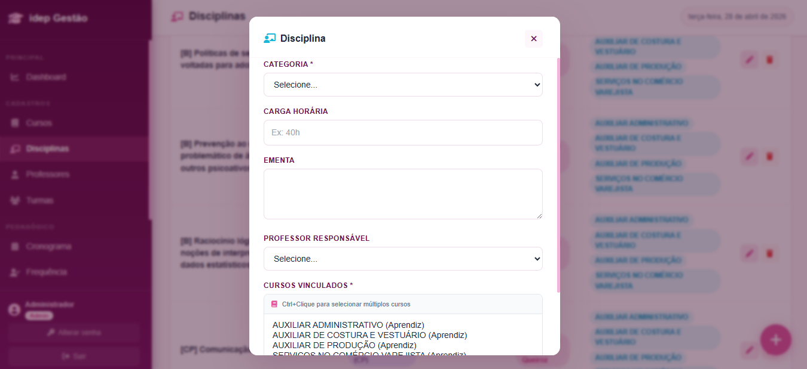
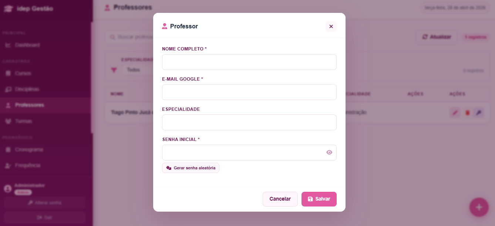
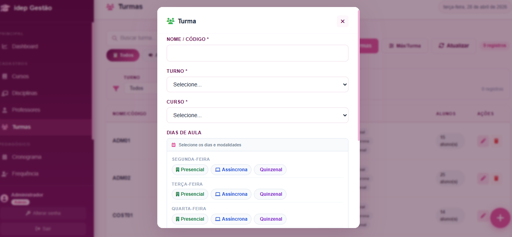
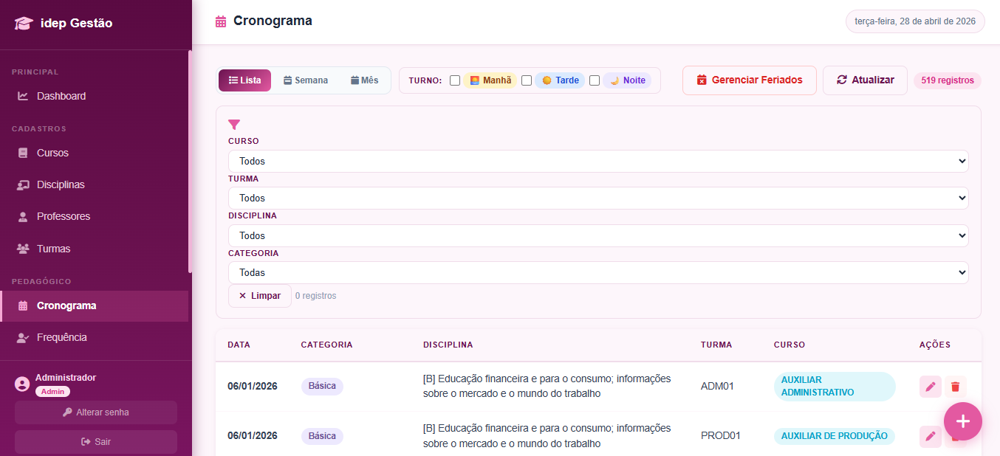
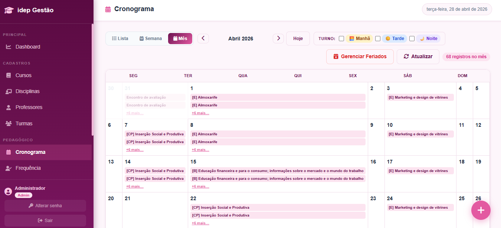
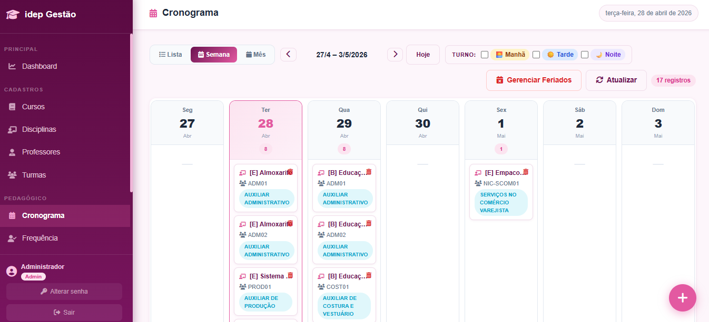
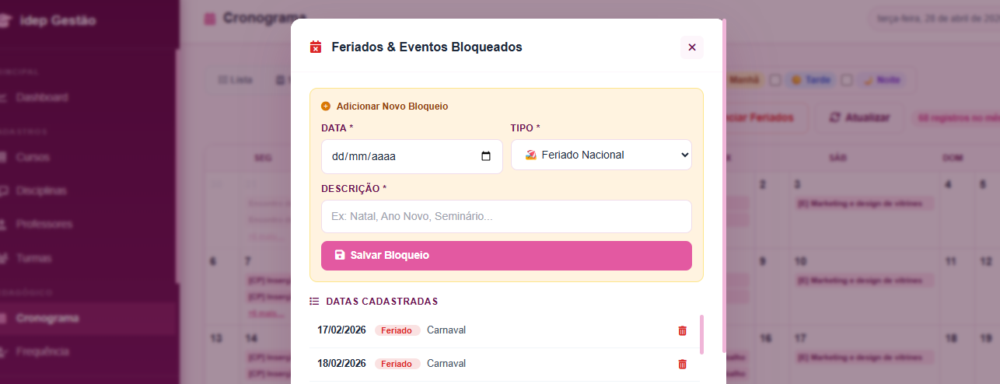
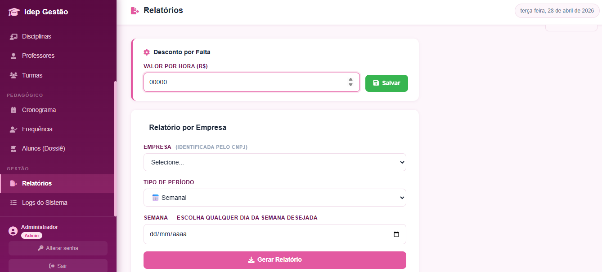
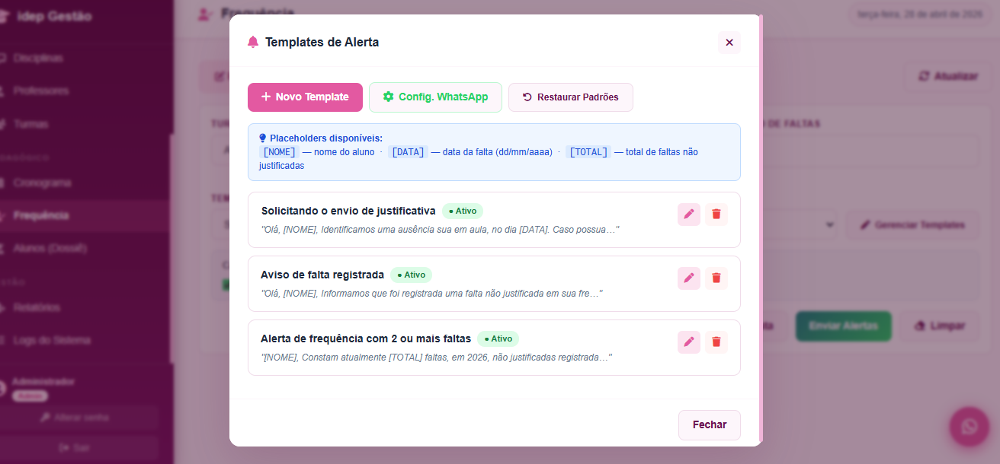
Sobre o Projeto
O Intuito
Este projeto foi concebido para modernizar e centralizar a gestão acadêmica e o acompanhamento individual dos alunos. A necessidade surgiu da dificuldade em registrar e monitorar a frequência de forma eficiente, gerenciar cursos e aulas, e ter uma visão holística do desempenho e histórico de cada aprendiz. O objetivo era criar um ambiente intuitivo para professores e administradores, além de um dossiê completo para cada aluno, facilitando a comunicação e a tomada de decisões pedagógicas.
Solução Implementada
Desenvolvi uma plataforma de gestão escolar robusta, com foco na otimização dos processos educacionais e no acompanhamento individualizado dos alunos:
- Controle de Frequência: Um ambiente dedicado onde professores podem registrar a frequência dos alunos em aulas e cursos de forma rápida e precisa, eliminando planilhas manuais.
- Administração de Cursos e Aulas: Módulo administrativo completo para a criação, edição e gerenciamento de cursos, aulas, definição de carga horária e elaboração de cronogramas. Permite flexibilidade na organização da grade curricular.
- Gestão de Feriados: Ferramenta integrada para o registro e gerenciamento de feriados, garantindo que os cronogramas de aulas sejam ajustados automaticamente, evitando conflitos e retrabalho.
- Relatórios de Desempenho por Empresa: Geração de relatórios detalhados sobre o desempenho dos alunos, incluindo quantidade de faltas, valores a serem descontados e datas das ausências, com a possibilidade de envio por e-mail para as empresas parceiras.
- Dossiê do Aluno 360°: Uma aba dedicada que consolida todas as informações relevantes do aluno: frequência, turmas que participa, aulas pendentes, desempenho acadêmico, observações e um histórico completo. Inclui funcionalidades para envio de alertas personalizados via e-mail e WhatsApp, facilitando a comunicação e o suporte individualizado.
Resultados
A implementação deste sistema transformou a gestão escolar, proporcionando **maior controle, transparência e eficiência** nos processos acadêmicos. Professores e administradores ganharam ferramentas poderosas para gerenciar suas responsabilidades, enquanto o Dossiê do Aluno permitiu um acompanhamento mais próximo e personalizado, resultando em **melhor desempenho e engajamento dos aprendizes**. A comunicação aprimorada e os relatórios detalhados fortaleceram a parceria com as empresas, demonstrando o valor e a organização da instituição.
Tecnologias Usadas
Informações
Desafios
- Desenvolvimento de uma interface intuitiva para registro de frequência e gestão de cursos.
- Integração de dados de frequência e desempenho para o Dossiê do Aluno.
- Criação de relatórios dinâmicos e personalizáveis para empresas.
- Implementação de um sistema de comunicação eficaz via e-mail e WhatsApp.
- Gerenciamento de feriados e sua influência nos cronogramas de aulas.
Aprendizados e Lições
Lição 1: Visão 360° do Aluno e Personalização da Educação
A criação de um dossiê completo para cada aluno, centralizando todas as informações relevantes, permite uma abordagem mais personalizada e eficaz no acompanhamento pedagógico. A capacidade de enviar alertas e comunicações customizadas fortalece o engajamento e o suporte ao desenvolvimento do aprendiz.
Lição 2: Otimização da Gestão Acadêmica e Administrativa
A automação do registro de frequência, a gestão de cursos e a integração de feriados simplificam significativamente as tarefas administrativas. Isso libera tempo para que educadores e gestores se concentrem na qualidade do ensino e no desenvolvimento estratégico da instituição, demonstrando o impacto positivo da tecnologia na eficiência operacional.
Gostou deste Projeto?
Veja mais projetos ou entre em contato para discutir novas oportunidades